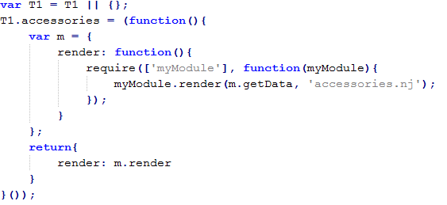

I. Intro - what is a scriptloader and why should we use it?
Current website structure
If you look at the current toyota website, the general structure is like this:
This way of working has advantages & disadvantages...
Pros:
- All javascript logic for each page is cached on first pageview. Second page will get all javascript directly from cache
- Only 2 requests are done to download all javascript
- Too much script is downloaded on the first visit (scripts for components which are not there are downloaded)
- Too many libraries are initialized
To only download & initialize the scripts we actually need, we use a scriptloader (requirejs, in this presentation)
Using a scriptloader
Let's assume 'T1-dealerfinder.js' is only needed on the 'homepage', and 'T1-accessories.js' is only needed on the 'carchapter'.
Advantages & disadvantages for this approach
Pros:
- Only the scripts which are actually needed are downloaded and initialized
- Many more requests are needed
- Dependencies are not identified (T1-dealerfinder will need jQuery, postal, lodash and bootstrap to work properly; you'll have to identify these dependencies yourself
Using a scriptloader + dependencies

Following this structure, each and every component will become easier to reuse elsewhere. Each component knows by itself which dependencies it needs to download to work properly.
Big advantage of using requirejs + dependencies: All dependancies will download automatically (no 3rd party plugin will load without any purpose).
Using a scriptloader + dependencies + packager
In this setup we limit the amount of requests to bundle all components which are needed on every page.
In this case:
- T1-utilities, postal, lodash, T1-navigation, jQuery & bootstrap will be delivered together
- T1-dealerfinder will ONLY download on the homepage
- T1-accessories will ONLY download on the carchapter
II. General usage
Basic require structure

require(['module1', 'module2', 'module3'], function(m1, m2, m3){});
Where the 'modules' can be
- filepaths
- keys (see require config)
- filenames within the same directory
m1,m2,m3 will contain all module methods which are exposed by the factory functions
Require works purely with AMD modules. To be able to load your script via require, you should write it as an AMD module.
What is an AMD module
An AMD module defines 3 things: define('moduleName', [dependencies], factory)
- ModuleName: the name of the module (this only has importance when you package multiple modules into 1 file)
- Dependencies: all dependency-modules which need to be loaded to insure correct functioning of the defined module
- Factory: function which generates the module instance
What is a factory
Imagine creating a date in javascript, var d = new Date();: here we create an instance (var d) of object 'Date'. Important to realize is that Object 'Date' is only a definition of functionalities. The real initialization of the object happens when we run the constructor (new Date), and therefor create an instance of the object
A factory works more or less similar. The factory is nothing more than a function which will generate your object. In other words, it's just a definition! The initialization will only happen once the factory is executed.
At the moment we already make use of factory functions, the only difference with require is that we run these factories while the page is loading.
Where to place the require-statement
You have 2 choices
- Place the require-statement in the function where you need it
 - Place the require-statement around a function (or component)
When placed around the function, the amd-module will be downloaded before T1.accessories module definition is created; when placed inside the function, the amd-module will be loaded the first time you run the function
Require AMD-module load sequence
To load an AMD-module require can fetch the script in 3 different ways:
- Require will check if the module-name was defined earlier somewhere: via define('moduleName', [dependencies], factory)
- If the module was not defined earlier, require will check if you have a path configured to the module (in require.config.paths)
- If none of the options above, require will try to interpret the module-name as a path